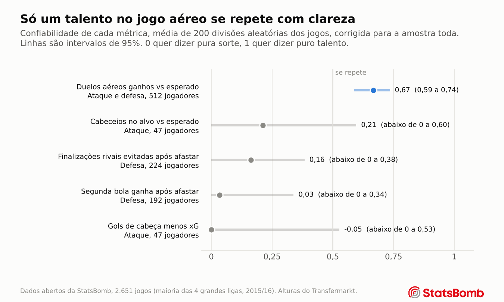

Capítulo 4
Talento ou sorte
Um ranking de jogadores só serve se ficasse parecido com outro conjunto de jogos. Este capítulo mostra como cada ranking do projeto foi testado, e quais passaram.
O problema dos números brutos
Gareth Bale marcou 10 gols de cabeça com 4,0 esperados. Pape Paye ganhou 16 de 22 duelos aéreos quando um jogador médio teria ganhado 9. Os dois números impressionam, e os dois vêm de amostras pequenas. Alguns quiques de sorte podem gerar um número assim, então três passos separam o que parece bom do que é real.
Passo um, comparar com o esperado
Cada cabeceio recebe uma probabilidade dos modelos dos capítulos 2 e 3, calculada sem ver os cabeceios do próprio jogador. O número de um jogador é o que ele de fato fez menos a soma dessas probabilidades, dividido pelo número de cabeceios que ele teve. Para duelos aéreos, ele aparece a cada 100 duelos.
Passo dois, puxar amostras pequenas para a média
Um jogador com 22 duelos e outro com 423 duelos não merecem a mesma confiança. A solução é um método estatístico padrão chamado encolhimento por Bayes empírico. Ele estima o quanto o talento real varia entre os jogadores e depois puxa o número de cada um para zero de acordo com o quanto a sua própria amostra é ruidosa.
Dois jogadores, dois tamanhos de amostra
Pape Paye ganhou 16 duelos aéreos com 9,1 esperados em 22 duelos, o que dá +31 a cada 100. Com tão poucos duelos, o método mantém só um quarto disso, e ele termina em +8.
Aritz Aduriz ganhou 239 com 151 esperados em 423 duelos, o que dá +21 a cada 100. Com tanta evidência, o método mantém a maior parte, e ele termina em +18, o melhor de todos os jogadores.
Passo três, conferir se se repete
Mesmo números encolhidos podem ser quase só ruído. O teste de verdade é ver se o número de um jogador em um conjunto de jogos prevê o número dele em outro. Isso se chama confiabilidade por metades.
- Cada jogo é sorteado para o grupo A ou o grupo B. Um jogo inteiro vai sempre para um lado só, então coisas como um adversário fraco não aparecem nas duas metades.
- O número acima do esperado de cada jogador é calculado separadamente no grupo A e no grupo B.
- Considerando todos os jogadores, os números de A são correlacionados com os de B. Se quem é bom em A também é bom em B, a métrica mede algo real.
- Cada metade tem só metade dos dados, então a correlação é ajustada para a amostra toda com uma fórmula padrão, a correção de Spearman Brown.
- O processo inteiro é repetido em 200 divisões aleatórias diferentes. A média é a confiabilidade. Para obter um intervalo de 95%, cada repetição também reamostra os jogadores com reposição, então o intervalo reflete tanto a divisão aleatória quanto quais jogadores calharam de estar nos dados.
Uma confiabilidade de 0 quer dizer que o ranking é pura sorte. Uma confiabilidade de 1 quer dizer que é puro talento. De 0,5 para cima, vale a pena usar o ranking.

| Métrica | Jogadores | Confiabilidade | Intervalo de 95% |
|---|---|---|---|
| Duelos aéreos ganhos acima do esperado | 512 | 0,67 | 0,59 a 0,74 |
| Cabeceios no alvo acima do esperado | 47 | 0,21 | abaixo de 0 a 0,60 |
| Finalizações rivais evitadas após afastar | 224 | 0,16 | abaixo de 0 a 0,38 |
| Segunda bola ganha após afastar | 192 | 0,03 | abaixo de 0 a 0,34 |
| Gols de cabeça menos xG | 47 | perto de 0 | abaixo de 0 a 0,53 |
Só uma métrica passa da marca. A habilidade em duelos aéreos se repete com força, com intervalo de 95% de 0,59 a 0,74, mesmo com o modelo por trás já sabendo a altura dos dois jogadores. A ponta de baixo do intervalo fica acima da estimativa de todas as outras métricas.
As outras quatro não mostram sinal claro, mas os intervalos contam uma segunda história importante. A finalização de cabeça tem confiabilidade perto de zero, mas o seu intervalo chega a 0,53, porque só 47 jogadores têm 25 ou mais finalizações de cabeça. Então os dados não encontram evidência de que alguns jogadores finalizam de cabeça melhor que outros, mas também não conseguem descartar um talento moderado. A pontaria de cabeça está na mesma situação, com um intervalo que vai até 0,60.
É o jogador ou o time?
Um time que defende bem os cruzamentos poderia fazer todos os seus defensores parecerem bons. Para conferir, o número de duelos de cada jogador foi comparado com o dos seus companheiros nos mesmos jogos. A correlação é de só 0,10, e a variação entre times é cerca de um terço da variação entre jogadores. O talento em duelos aéreos parece individual.
O ranking também resiste a duas verificações mais duras na página de Método. Um modelo de efeitos mistos, que também ajusta pela força de cada adversário, ordena os jogadores quase do mesmo jeito (correlação de postos 0,988). E tirar as temporadas que acompanham um time só, sobretudo o Barcelona, mantém a confiabilidade em 0,67.
Para observar o jogo aéreo, use os duelos aéreos ganhos acima do esperado. Ainda não confie em gols de cabeça acima do xG. Os dados gratuitos têm poucos cabeceios por jogador para separar talento de sorte na finalização, em qualquer direção.